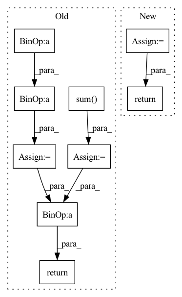

Pattern ID :807
Before Change
if mask is not None:
mask = mask.contiguous().view(mask.size()[0], -1)
pred = pred * mask
target = target * mask
a = torch.sum(pred * target)
b = torch.sum( pred)
c = torch.sum(target)
d = (2 * a) / (b + c + self.eps)
return 1 - d
After Change
mask = mask.contiguous().view(mask.size(0), -1)
pred = pred * mask
gt = gt * mask
dice_coeff = (2 * (pred * gt).sum()) / (
pred.sum() + gt.sum() + self.eps)
return 1 - dice_coeff
@MODELS.register_module()In pattern: SUPERPATTERN
Frequency: 3
Non-data size: 9
Instances Fragment ID: 2915661
Project Name: open-mmlab/mmocr
Commit Name: 1cbc42eceb40334c56474b979b1ac5be0065280a
Time: 2022-07-20
Author: gaotongxiao@gmail.com
File Name: mmocr/models/common/losses/dice_loss.py
M Class Name: DiceLoss
N Class Name: MaskedDiceLoss
M Method Name: forward(4)
N Method Name: forward(4)
M Parent Class: nn.Module
N Parent Class: nn.Module
M File Name: mmocr/models/common/losses/dice_loss.py
N File Name: mmocr/models/common/losses/dice_loss.py
M Start Line: 16
M End Line: 31
N Start Line: 25
N End Line: 58
Before Change
elif derivative == 2:
invr3 = (1. / (dist** 3)).unsqueeze(1)
diff_axis = input_.transpose(1, 2).unsqueeze(3)
diff_axis = (diff_axis - self.atoms.T.unsqueeze(1))**2
diff_axis = diff_axis[:, [
[1, 2], [2, 0], [0, 1]], ...].sum( 2)
return (diff_axis * invr3)
@staticmethod
def _get_distance_quadratic(elec_pos, atom_pos):After Change
elif derivative == 2:
d2_dist = self.get_second_der_distance(input_, dist)
if self.scale:
der_dist = self.get_der_distance(input_, dist)
return get_second_der_scaled_distance(self.kappa,
dist,
der_dist,
d2_dist) Fragment ID: 2915614
Project Name: nlesc-jcer/qmctorch
Commit Name: 952cc59bced026b13272ad2193da84fa2b03665b
Time: 2021-04-02
Author: nicolas.gm.renaud@gmail.com
File Name: qmctorch/wavefunction/jastrows/distance/electron_nuclei_distance.py
M Class Name: ElectronNucleiDistance
N Class Name: ElectronNucleiDistance
M Method Name: forward(3)
N Method Name: forward(3)
M Parent Class: nn.Module
N Parent Class: nn.Module
M File Name: qmctorch/wavefunction/jastrows/distance/electron_nuclei_distance.py
N File Name: qmctorch/wavefunction/jastrows/distance/electron_nuclei_distance.py
M Start Line: 58
M End Line: 80
N Start Line: 64
N End Line: 95
Before Change
if preds.shape[2:] != targets.shape[2:]:
preds = F.interpolate(preds, size=targets.shape[2:], mode="bilinear", align_corners=False)
tp = torch.sum( targets*preds, dim=(2, 3))
fn = torch.sum(targets* (1- preds), dim=(2, 3))
fp = torch.sum((1-targets)*preds, dim=(2, 3))
dice_score = (tp + 1e-6) / (tp + self.delta * fn + (1 - self.delta) * fp + 1e-6)
dice_score = torch.sum(1-dice_score, dim=-1)
// adjust loss to account for number of classes
dice_score = dice_score / targets.shape[1]
return dice_score.mean()
After Change
def forward(self, preds, targets: Tensor) -> Tensor:
if isinstance(preds, list):
return sum([w * self._forward(pred, targets) for (pred, w) in zip(preds, self.aux_weights)])
return self._forward(preds, targets)
Fragment ID: 2915784
Project Name: sithu31296/semantic-segmentation
Commit Name: b68900992fb24dd5166b2b34e3d35d19493d747d
Time: 2021-08-21
Author: sithu31296@gmail.com
File Name: utils/losses.py
M Class Name: Dice
N Class Name: Dice
M Method Name: forward(3)
N Method Name: forward(3)
M Parent Class: nn.Module
N Parent Class: nn.Module
M File Name: utils/losses.py
N File Name: utils/losses.py
M Start Line: 48
M End Line: 62
N Start Line: 77
N End Line: 80